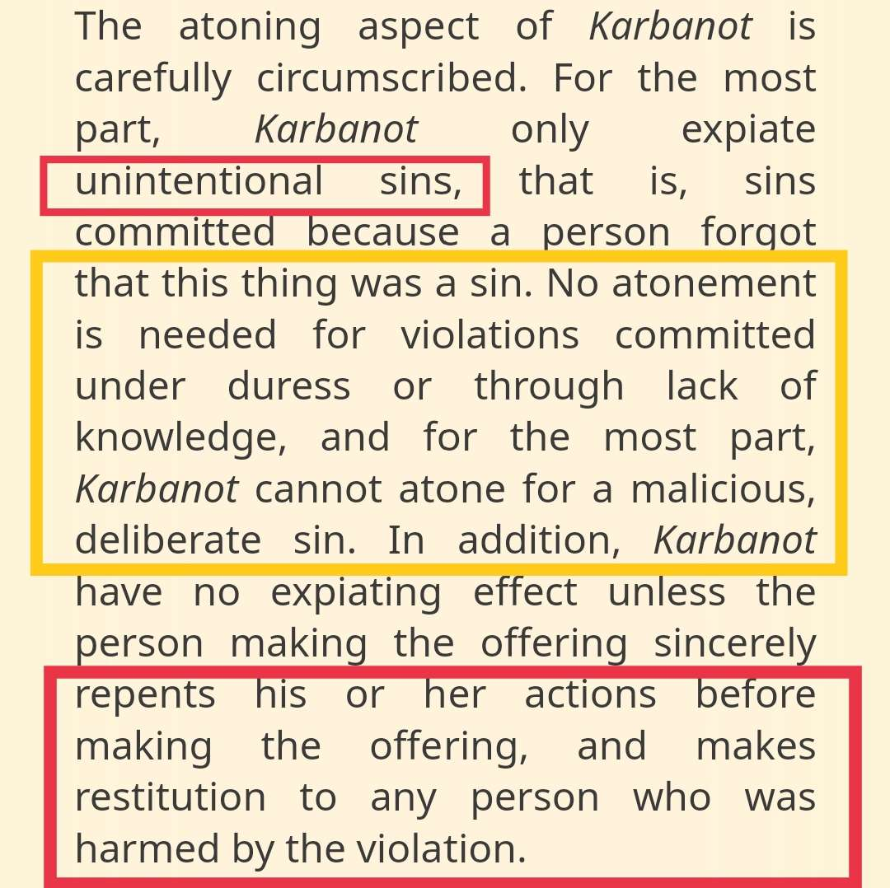
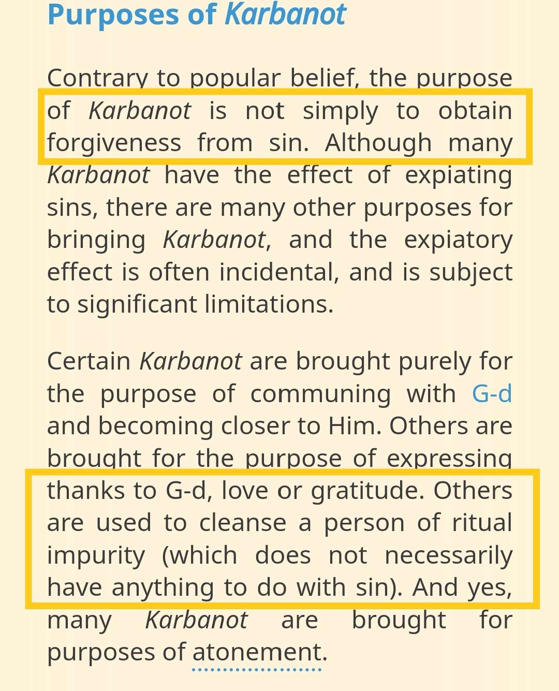

Some Christians may bring up that a sacrifice is Always needed for the forgiveness of sin. They try to justify this by using the Jews as an example. However, the Jews dont believe this. This is a concept only in Christianity.
Some Christians may bring up that the Jews used to sacrifice animals, however they seem to bring injustice to the Jews by making this point
"In Jewish practice, prayer has taken the place of sacrifices. In accordance with the words of Hosea, we render instead of bullocks the offering of our lips (Hosea 14:3) (please note: the KJV translates this somewhat differently). While dedicating the Temple, King Solomon also indicated that prayer can be used to obtain forgiveness (I Kings 8:46-50)"
https://www.jewfaq.org/qorbanot.htm
Prayers can also be used to obtain forgiveness
But isn't a blood sacrifice required in order to obtain forgiveness?
"No. Although animal sacrifice is one means of obtaining forgiveness, there are non-animal offerings as well, and there are other means for obtaining forgiveness that do not involve sacrifices at all. The Biblical book of Jonah tells of an entire community condemned to destruction that was forgiven when they simply repented and fasted, without ever offering any sacrifice, blood or otherwise. (Jonah 3)
The passage that people ordinarily cite for the notion that blood is required is Leviticus 17:11: "For the soul of the flesh is in the blood and I have assigned it for you upon the altar to provide atonement for your souls; for it is the blood that atones for the soul." But the passage that this verse comes from is not about atonement; it is about dietary laws, and the passage says only that blood is used to obtain atonement; not that blood is the only means for obtaining atonement. Leviticus 17:10-12 could be paraphrased as "Don't eat blood, because blood is used in atonement rituals; therefore, don't eat blood."


Source : https://www.jewishvirtuallibrary.org/sacrifices-and-offerings-karbanot